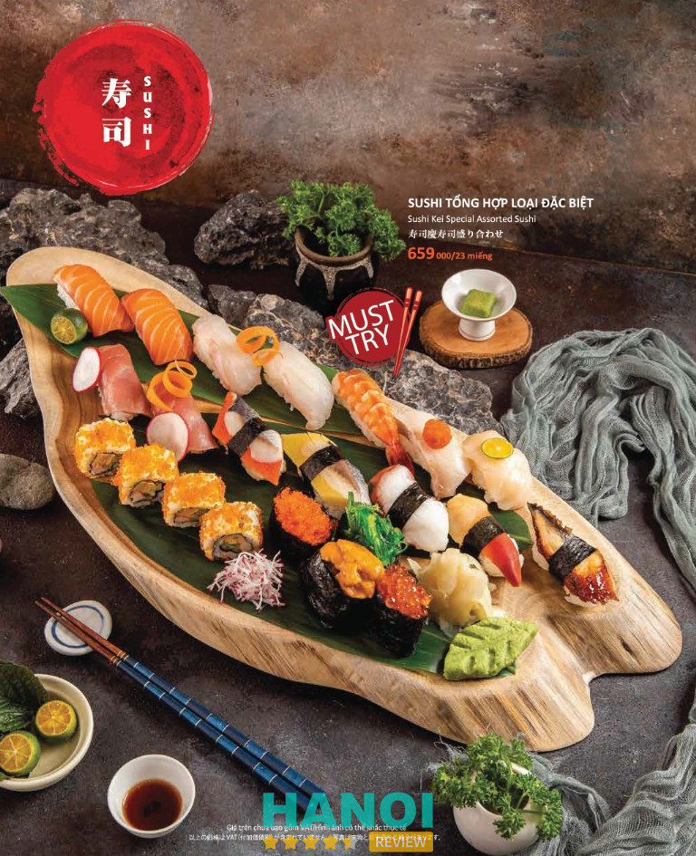
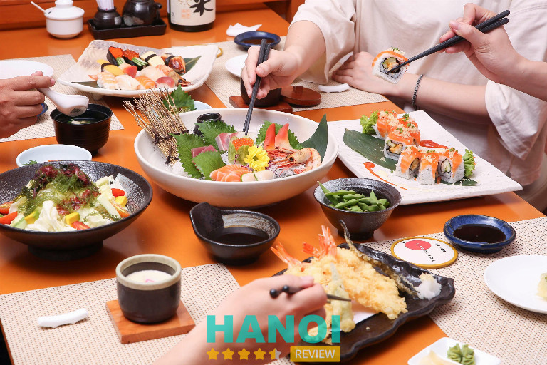
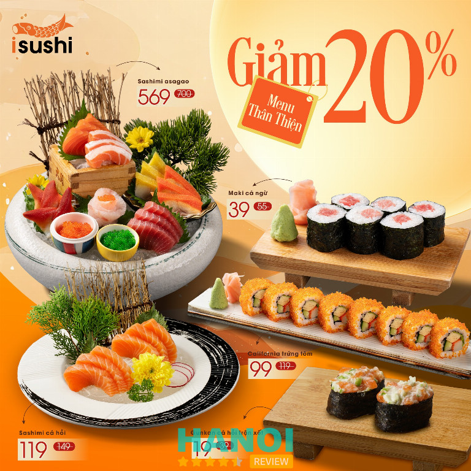
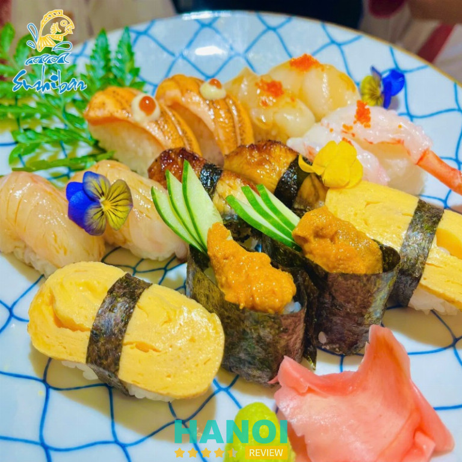
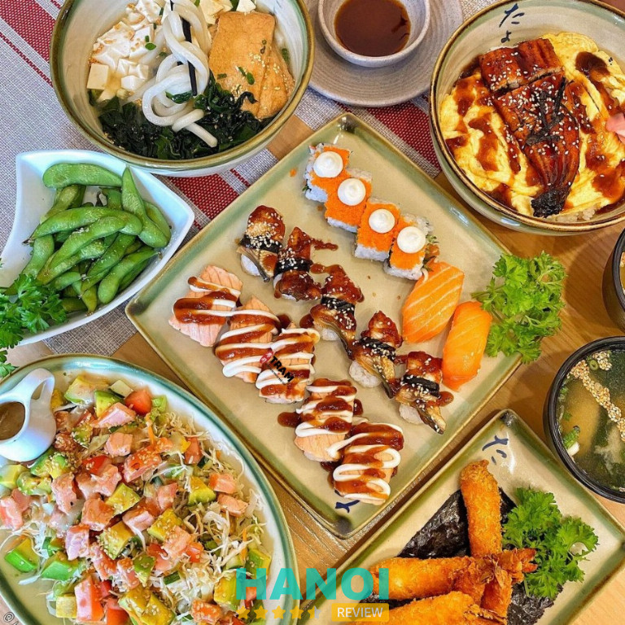
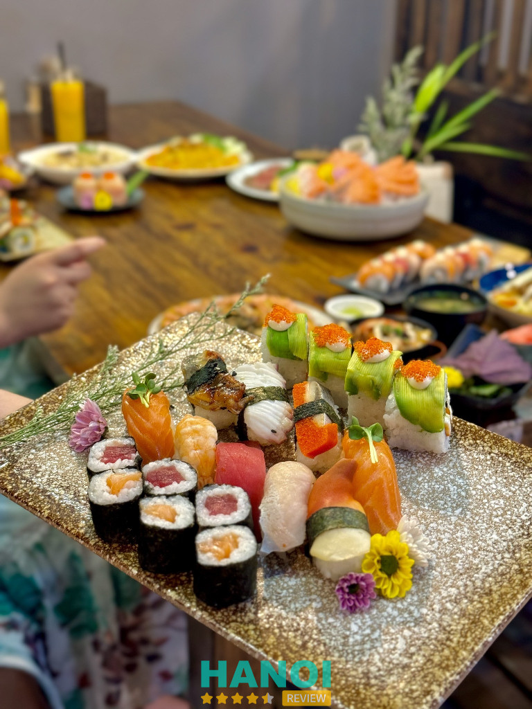
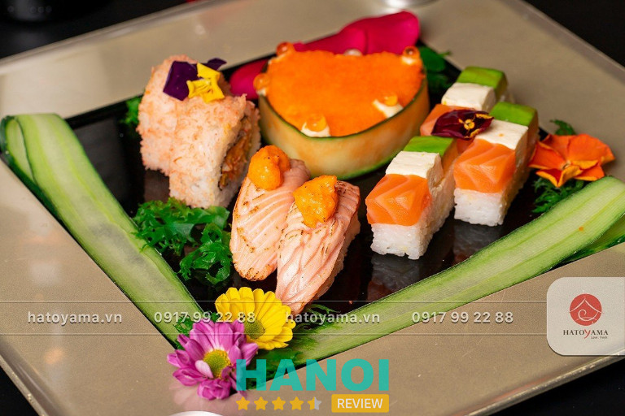
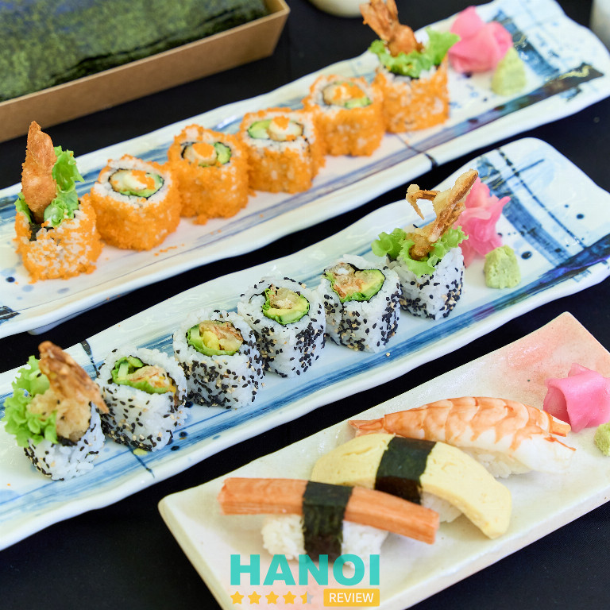
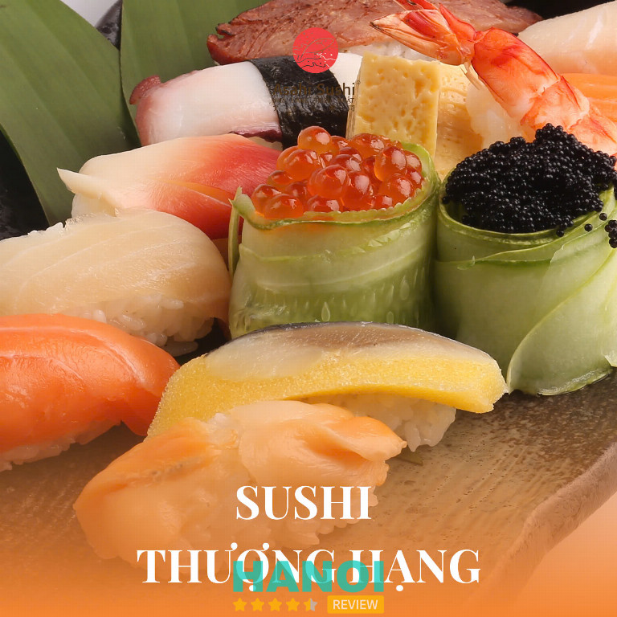
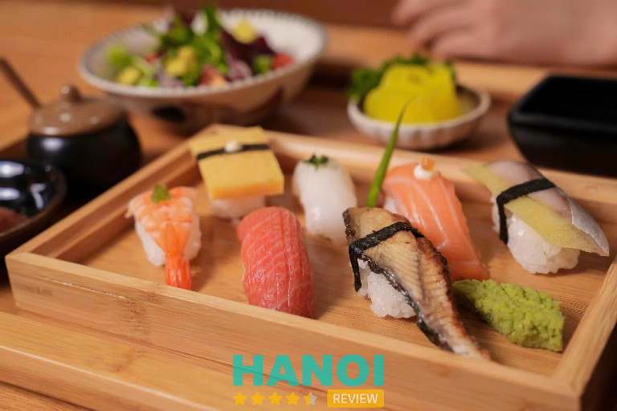

10 Quán sushi ngon ở Hà Nội khiến thực khách mê mẩn vị tinh tế
Thủ đô không chỉ nổi tiếng với ẩm thực truyền thống mà còn là thiên đường của sushi tươi ngon. Những quán sushi ngon tại Hà Nội mang đến trải nghiệm thưởng thức đậm đà, tinh tế và chất lượng, từ nguyên liệu đến cách chế biến, khiến thực khách khó quên ngay từ lần đầu tiên.
Top 10 Quán sushi ngon tại Hà Nội cực “chill” cho team mê ăn uống
Các quán sushi ngon tại Hà Nội hiện nay không chỉ phục vụ món ăn, mà còn đem đến trải nghiệm ẩm thực đỉnh cao, giúp thực khách tận hưởng hương vị tinh tế và không gian sang trọng, thân thiện. Đây là lý do nên chọn những địa điểm uy tín, chất lượng để thưởng thức sushi.
Sushi Kei – Thanh Xuân
Giữa lòng Hà Nội, Sushi Kei là một trong những quán sushi tại Hà Nội được yêu thích nhất, nổi bật với không gian ấm cúng, phong cách Nhật Bản thanh lịch cùng thực đơn đa dạng từ buffet đến gọi món. Cái tên “Kei” trong tiếng Nhật có nghĩa là niềm vui và hạnh phúc – đúng như tinh thần mà nhà hàng muốn gửi gắm đến thực khách khi thưởng thức từng miếng sushi, sashimi tươi ngon được chế biến công phu.

Sushi Kei được xem là “thiên đường vị giác” với những lát sashimi cắt tinh tế, giữ trọn hương vị biển cả, từng thớ cá tươi căng mọng, ngọt thanh và béo ngậy. Mỗi phần sushi là sự hòa quyện hoàn hảo giữa vị chua nhẹ của giấm, độ ngọt tươi của cá sống và chút cay nồng của mù tạt, mang đến trải nghiệm ẩm thực trọn vẹn.
Dưới bàn tay tài hoa của bếp trưởng Chiba Kazuhiko – người có hơn 30 năm kinh nghiệm trong nghệ thuật ẩm thực Nhật, các món ăn tại Sushi Kei luôn chú trọng hương vị tự nhiên, ít đường, không dùng gia vị hóa học, thể hiện đúng tinh thần “ăn ngon vì sức khỏe”.
Thực khách yêu thích Sushi Kei bởi:
- Sashimi tươi mát, ngọt dịu tự nhiên
- Sushi thơm mềm, vị giấm cân bằng
- Tempura vàng giòn, không ngấy
- Lẩu đậm đà hương vị Nhật
- Không gian trang nhã, pha trộn truyền thống và hiện đại
Sushi Kei xứng đáng là địa chỉ lý tưởng cho những ai yêu ẩm thực Nhật Bản. Nếu đang tìm quán sushi tại Hà Nội mang trọn hồn Nhật, Sushi Kei chắc chắn là lựa chọn không thể bỏ lỡ.
Thông tin liên hệ:
- Địa chỉ: 72A Nguyễn Trãi, Thượng Đình, Thanh Xuân, Hà Nội
- Điện thoại: 024 6688 5255
- Email: marketing.hn@goldsunfood.vn
- Website: sushikei.vn
- Facebook: fb.com/SushiKei.VN
Tokyo Deli Sushi – Cầu Giấy
Tokyo Deli Sushi là một trong những quán sushi ở Hà Nội được yêu thích nhờ phong cách ẩm thực Nhật Bản tinh tế và gần gũi. Với vị trí thuận tiện tại trung tâm quận Cầu Giấy, nơi đây mang đến trải nghiệm ẩm thực đậm chất Nhật trong không gian vừa hiện đại vừa truyền thống – lý tưởng cho bữa trưa công sở, buổi tối thư giãn cùng bạn bè hay những dịp đặc biệt bên gia đình.

Không chỉ gây ấn tượng bởi thực đơn đa dạng, Tokyo Deli còn nổi bật với chất lượng nguyên liệu tươi mỗi ngày. Từng lát sashimi, miếng sushi hay bát mì Udon đều được chế biến tỉ mỉ, giữ trọn hương vị tự nhiên của biển cả và tinh thần “omotenashi” – hiếu khách đặc trưng của người Nhật.
Một số món ăn được yêu thích tại Tokyo Deli:
- Sushi cá hồi, cá ngừ tươi tan ngay trong miệng
- Trứng hấp kiểu Nhật mềm mịn, vị thanh
- Mì Udon và Donburi đậm đà, ấm lòng
- Bento trưa tiện lợi, chuẩn vị Nhật
Không gian Tokyo Deli sử dụng gam nâu vàng chủ đạo, kết hợp ánh sáng dịu nhẹ cùng nội thất gỗ ấm cúng, tạo nên bầu không khí thư giãn và thân thiện. Mỗi chi nhánh đều giữ phong cách đồng nhất – đơn giản nhưng tinh tế, đúng tinh thần Nhật Bản.
Nếu đang tìm kiếm quán sushi ở Hà Nội vừa ngon miệng, vừa đúng chuẩn Nhật, Tokyo Deli Sushi chắc chắn là điểm đến lý tưởng cho bạn.
Thông tin liên hệ:
- Địa chỉ: Tòa nhà N04, Hoàng Đạo Thúy, Cầu Giấy, Hà Nội
- Điện thoại: 024 7102 5710
- Email: dichvukhachhang@tokyodeli.com.vn
- Website: tokyodeli.com.vn
- Facebook: fb.com/TokyoDeliSushi
GỢI Ý: 10 Quán cafe trên cao ở Hà Nội mang đến trải nghiệm thú vị
iSushi – Ba Đình
iSushi là một trong những nhà hàng sushi được yêu thích nhất tại Hà Nội, nơi thực khách có thể trải nghiệm tinh hoa ẩm thực Nhật Bản với phong cách buffet đặc trưng. Không gian ấm cúng, đậm chất Nhật cùng thực đơn hơn 50 món sushi, sashimi, tempura và các món nóng được chế biến tinh tế mang đến hành trình vị giác trọn vẹn.

Điểm nổi bật tạo nên sức hấp dẫn của iSushi nằm ở cá hồi tươi ngon mỗi ngày – niềm tự hào của thương hiệu. Cá hồi tại đây được chọn lọc kỹ lưỡng, giàu Omega-3, DHA và protein, giúp từng miếng sushi, sashimi đều tươi ngọt, béo ngậy và đậm vị biển cả.
Một số món đặc sắc được nhiều thực khách ưa chuộng:
- Sashimi cá hồi, cá ngừ, bạch tuộc tươi sống
- Sushi trứng cá hồi, sushi lươn Nhật
- Tempura tôm, rau củ chiên giòn
- Mì Udon, lẩu Nhật hương vị thanh nhẹ
Ngoài hương vị chuẩn Nhật, quán sushi tại Hà Nội này còn ghi điểm nhờ đội ngũ đầu bếp tay nghề cao và phong cách phục vụ chu đáo. Không gian được thiết kế theo phong cách Nhật truyền thống, mang đến cảm giác thư giãn, gần gũi nhưng vẫn tinh tế.
iSushi xứng đáng là địa chỉ lý tưởng cho những ai muốn thưởng thức ẩm thực Nhật Bản đích thực ngay giữa lòng thủ đô. Ghé ngay nhà hàng sushi iSushi Hà Nội để cảm nhận hương vị tươi ngon và tinh tế trong từng món ăn!
Thông tin liên hệ:
- Địa chỉ: 16 Nguyễn Chí Thanh, Ngọc Khánh, Ba Đình, Hà Nội
- Điện thoại: 1900 6622
- Email: hn.support@ggg.com.vn
- Website: isushi.com.vn
- Facebook: fb.com/isushi.BuffetNhatBan
Sushibar Hà Nội – Cầu Giấy
Sushibar Hà Nội là nhà hàng Nhật Bản lâu đời được nhiều thực khách yêu thích, nổi bật với hơn 200 món ăn truyền thống như Sushi, Maki, Soba, cơm lươn… Không chỉ là quán sushi tại Hà Nội mang đậm phong vị xứ hoa anh đào, nơi đây còn là điểm hẹn quen thuộc cho những ai muốn khám phá ẩm thực Nhật Bản tinh tế và chuẩn mực.

Không gian tại Sushibar mang nét thanh lịch, kết hợp giữa hiện đại và truyền thống, gợi cảm giác ấm cúng, nhẹ nhàng nhưng không kém phần sang trọng. Nhiều thực khách ấn tượng với phong cách phục vụ tận tâm cùng cách bày trí món ăn đẹp mắt, mang đậm tinh thần “omotenashi” – lòng hiếu khách đặc trưng của người Nhật.
Một số món được yêu thích tại Sushibar Hà Nội:
- Sushi cá hồi, sushi trứng cá chuồn, sushi tôm nướng phô mai
- Sashimi tổng hợp tươi ngon mỗi ngày
- Cơm lươn Nhật nướng than hoa
- Mì soba lạnh và udon nóng hổi
- Các set bento trưa tiện lợi, đậm vị truyền thống
Điểm đặc biệt là toàn bộ nguyên liệu đều được chọn lọc kỹ lưỡng, nhập khẩu trực tiếp, đảm bảo độ tươi ngon và chuẩn vị Nhật Bản. Nhờ vậy, mỗi món ăn đều mang đến trải nghiệm trọn vẹn cho thực khách, từ hương vị đến cách thưởng thức.
Sushibar Hà Nội xứng đáng là địa chỉ ẩm thực Nhật Bản lâu đời đáng để thử và trải nghiệm. Nếu đang tìm quán sushi tại Hà Nội ngon, chuẩn vị, hãy ghé Sushibar để cảm nhận trọn vẹn hương vị tinh túy của Nhật Bản.
Thông tin liên hệ:
- Địa chỉ: Tầng 1 Toà The Loop IPH, 241 Xuân Thuỷ, Cầu Giấy, Hà Nội
- Điện thoại: 096 367 63 43
- Email: sushibar.hn@gmail.com
- Facebook: fb.com/nhahangsushibarhanoi
Trạm Sushi – Ba Đình
Ẩn mình giữa khu phố yên tĩnh Trấn Vũ, Trạm Sushi là điểm dừng chân quen thuộc của những ai yêu thích hương vị Nhật Bản chuẩn vị. Không quá cầu kỳ, nhà hàng ghi dấu ấn bởi sự tươi ngon trong từng miếng sushi, sashimi và phong cách phục vụ nhanh gọn, tiện lợi – đúng chất của một quán ăn hiện đại nhưng vẫn giữ trọn tinh thần tinh tế của ẩm thực xứ hoa anh đào.

Là quán sushi tại Hà Nội hoạt động theo mô hình quán ăn nhanh kết hợp giao hàng tận nơi, Trạm Sushi hướng đến sự tiện lợi mà vẫn đảm bảo chất lượng từng phần ăn. Mỗi món đều được chế biến từ nguyên liệu tươi mới, được chọn lọc kỹ càng mỗi ngày để mang đến trải nghiệm ẩm thực hài lòng nhất cho thực khách.
Một số món được yêu thích tại Trạm Sushi:
- Sushi cá hồi béo ngậy, thơm ngọt tự nhiên
- Sashimi tổng hợp – lựa chọn hấp dẫn cho bữa ăn nhẹ
- Maki cuộn rong biển truyền thống
- Set cơm sushi tiện lợi cho dân văn phòng
Giá cả tại Trạm Sushi được đánh giá là hợp lý, phù hợp với nhiều đối tượng khách hàng – từ sinh viên đến dân công sở. Không gian nhỏ gọn, ấm cúng cùng phong cách phục vụ thân thiện khiến nơi đây trở thành “điểm dừng sushi” lý tưởng cho những ai muốn thưởng thức nhanh nhưng vẫn đủ trọn vị Nhật.
Nếu bạn đang tìm kiếm sushi tươi ngon tại Hà Nội, Trạm Sushi chắc chắn là lựa chọn đáng tin cậy. Hãy ghé thăm hoặc đặt hàng ngay để cảm nhận hương vị Nhật Bản tinh tế trong từng lát sushi!
Thông tin liên hệ:
- Địa chỉ: 90 Trấn Vũ, Ba Đình, Hà Nội
- Điện thoại: 0336 252 590
- Email: info@tramsushi.com
- Website: tramsushi.com
- Facebook: fb.com/tramsushingon
THAM KHẢO: 7 Nhà hàng ở Quang Trung Hà Nội ngon nổi tiếng
Sio Sushi 67 Hoàng Cầu
Nằm giữa lòng quận Đống Đa, Sio Sushi là một trong những quán sushi ngon ở Hà Nội được giới sành ăn truyền tai nhau mỗi khi thèm hương vị Nhật chuẩn vị. Không gian sang trọng nhưng gần gũi, hương vị tươi mới cùng phong cách phục vụ chuyên nghiệp khiến Sio Sushi trở thành điểm đến yêu thích của nhiều thực khách.

Tại đây, mọi nguyên liệu đều được chọn lựa kỹ càng, từ lát cá hồi béo ngậy, miếng bạch tuộc giòn tươi đến cơm sushi dẻo thơm. Đầu bếp giàu kinh nghiệm với tay nghề tinh tế mang đến từng phần sushi chuẩn Nhật, đẹp mắt và đầy cảm xúc.
Đặc biệt, Sio Sushi luôn mang lại trải nghiệm đáng nhớ qua:
- Menu phong phú với hơn 50 món sushi và sashimi tươi sống.
- Không gian “chill” nhẹ nhàng, phù hợp cho cả hẹn hò lẫn tụ tập bạn bè.
- Mức giá hợp lý, món ăn chất lượng, trình bày đẹp mắt.
- Phong cách phục vụ thân thiện, nhanh nhẹn và tinh tế.
Mỗi lần ghé qua, thực khách đều có cảm giác như được thưởng thức nghệ thuật ẩm thực Nhật Bản thực thụ – tinh tế, tươi ngon và chuẩn vị. Chính điều này giúp Sio Sushi luôn nằm trong danh sách những quán sushi ngon ở Hà Nội được yêu thích nhất.
Nếu đang tìm một địa điểm lý tưởng để thưởng thức sushi ngon đúng điệu, hãy đến Sio Sushi để trải nghiệm hương vị Nhật Bản giữa lòng Hà Nội.
Thông tin liên hệ:
- Địa chỉ: 67 Hoàng Cầu, Đống Đa, Hà Nội
- Điện thoại: 0392 128 668
- Facebook: fb.com/Siosushi67
Hatoyama Japanese Restaurant – P. Ngọc Hà
Nằm trên con phố yên tĩnh Vạn Phúc, Hatoyama Japanese Restaurant được biết đến là một trong những nhà hàng ẩm thực Nhật Bản đỉnh cao tại Hà Nội. Với không gian sang trọng, tinh tế và phong cách phục vụ chuẩn mực, Hatoyama là điểm hẹn lý tưởng cho những ai yêu thích tinh hoa ẩm thực xứ hoa anh đào.

Điểm đặc biệt của Hatoyama chính là nguồn hải sản tươi sống, được nhập khẩu trực tiếp từ Nhật Bản và vận chuyển về Việt Nam trong vòng 24 giờ. Thực khách có thể cảm nhận trọn vẹn hương vị biển cả trong từng món ăn — từ sashimi, sushi cho đến các set tiệc Kaiseki được chế biến công phu, chuẩn phong cách Nhật.
Những yếu tố tạo nên sức hút của Hatoyama gồm:
- Hải sản cao cấp, tươi ngon mỗi ngày.
- Thực đơn đa dạng từ alacarte đến Kaiseki.
- Không gian sang trọng, đậm chất Nhật.
- Đồng hành cùng Đại sứ Văn hóa Ẩm thực Nhật Bản Tomisawa Hirokazu.
Mỗi món ăn tại Hatoyama không chỉ là sự kết hợp của nguyên liệu tinh túy mà còn là một tác phẩm nghệ thuật mang đậm tinh thần Nhật Bản – tinh tế, chuẩn xác và đầy cảm xúc.
Hatoyama Japanese Restaurant luôn là lựa chọn hàng đầu cho những bữa ăn đẳng cấp và đáng nhớ tại Hà Nội. Trải nghiệm một lần, để cảm nhận vị Nhật chân thực ngay giữa lòng Thủ đô.
Thông tin liên hệ:
- Địa chỉ: Số 8 Vạn Phúc, P. Ngọc Hà, Hà Nội
- Điện thoại: 0948 192 288
- Email: info@hatoyama.vn
- Website: hatoyama.vn
- Facebook: fb.com/Hatoyama.vn
Sushi Hokkaido Sachi – P. Cửa Nam
Nằm ngay trung tâm thủ đô, Sushi Hokkaido Sachi là điểm đến quen thuộc của những ai yêu thích ẩm thực Nhật Bản chuẩn vị. Với không gian sang trọng, đậm chất xứ hoa anh đào và nguyên liệu hải sản tươi sống, nơi đây được xem là một trong những quán sushi ở Hà Nội mang đậm hương vị truyền thống nhất.

Sushi Hokkaido Sachi gây ấn tượng bởi sự tinh tế trong từng lát cắt sashimi, từng miếng cơm sushi được trộn giấm chuẩn Nhật Bản, hòa quyện hoàn hảo giữa vị ngọt tự nhiên của cá và vị thanh nhẹ của cơm. Mỗi món ăn đều được chế biến trực tiếp bởi các đầu bếp người Nhật, mang đến trải nghiệm ẩm thực chân thực và cao cấp.
Một số món được thực khách yêu thích tại nhà hàng:
- Sushi cá hồi Hokkaido tươi mỗi ngày
- Sashimi tổng hợp với hải sản nhập khẩu
- Cơm lươn nướng sốt đặc trưng
- Set ăn Kaiseki tinh tế và đầy nghệ thuật
Không chỉ là nơi thưởng thức sushi, nhà hàng còn là không gian thư giãn, giao lưu văn hóa, nơi thực khách cảm nhận được trọn vẹn tinh thần Nhật Bản ngay giữa lòng Hà Nội. Dù là bữa tối riêng tư hay tiệc sang trọng, Sushi Hokkaido Sachi đều mang đến trải nghiệm ấn tượng.
Sushi Hokkaido Sachi – điểm đến lý tưởng cho những ai đang tìm kiếm sushi chuẩn vị ở Hà Nội.
Thông tin liên hệ:
- Địa chỉ: 33 Trần Hưng Đạo, P. Cửa Nam, Hà Nội
- Điện thoại: 024 3838 8988
- Email: cs@takahiro.com.vn
- Website: sushihokkaidosachi.com.vn
- Facebook: fb.com/sushihokkaidosachi
THAM KHẢO: 10 Quán salad ở Hà Nội tươi ngon, healthy và đáng thử nhất
Triều Nhật Asahi Sushi – Mega Grand World Hà Nội
Nhà hàng Triều Nhật Asahi Sushi là một trong những điểm đến nổi bật cho những ai yêu thích ẩm thực Nhật Bản tại Hà Nội. Với hơn nhiều năm hoạt động, Asahi Sushi đã trở thành nhà hàng sushi uy tín mang phong cách truyền thống kết hợp hiện đại, đem lại những trải nghiệm tinh tế cho thực khách.
Không gian sang trọng, phong cách kiến trúc Nhật độc đáo cùng thực đơn 500 món ăn đa dạng khiến nơi đây trở thành điểm hẹn lý tưởng cho người sành ăn sushi chuẩn vị.

Thực đơn tại Asahi Sushi là kết tinh của sự sáng tạo và tinh hoa ẩm thực Nhật, được dẫn dắt bởi bếp trưởng Yoshikawa Chikara – người có hơn 50 năm kinh nghiệm trong nghề. Từng món sushi, sashimi tại đây đều được chế biến từ nguồn nguyên liệu tươi ngon, trình bày tinh tế và mang đậm dấu ấn nghệ thuật Nhật Bản.
Một số hương vị được yêu thích tại Asahi Sushi:
- Sushi cá hồi tươi, trứng cá hồi, bạch tuộc Nhật
- Sashimi tổng hợp phong phú, cắt lát tươi mềm
- Cơm cuộn, mì udon và tempura kiểu Nhật truyền thống
- Các món nướng, lẩu Nhật được chế biến tinh tế
Asahi Sushi không chỉ là nhà hàng sushi ngon ở Hà Nội, mà còn là nơi gắn kết cảm xúc, giúp thực khách cảm nhận rõ nét tinh thần “omotenashi” – nghệ thuật hiếu khách của người Nhật. Hơn một thập kỷ qua, Asahi vẫn giữ vững vị thế là địa chỉ ẩm thực Nhật Bản đẳng cấp, mang đến hương vị chuẩn Nhật giữa lòng thủ đô.
Thông tin liên hệ:
- Địa chỉ: Shophouse PT 86-88, Phân khu The Venice, Mega Grand World , Hà Nội
- Điện thoại: 0902 286 286
- Email: trieunhat@gmail.com
- Website: asahisushi.vn
- Facebook: fb.com/NhaHangNhatAsahi
Ginza Sushi Express – Cầu Giấy
Tọa lạc tại khu vực sầm uất Trung Hòa, Ginza Sushi Express là một trong những nhà hàng sushi Hà Nội mang phong cách Nhật Bản hiện đại và độc đáo. Điểm nổi bật nhất của nơi đây là mô hình sushi băng chuyền kết hợp “tàu Shinkansen” – lần đầu tiên xuất hiện tại Việt Nam, tạo nên trải nghiệm ẩm thực thú vị cho mọi thực khách.

Với hơn 100 món ăn Nhật Bản phong phú như sushi, sashimi, tempura, mì udon và các món tráng miệng nhẹ nhàng, Ginza Sushi Express mang đến hương vị chuẩn Nhật giữa lòng Hà Nội. Thực khách có thể thưởng thức buffet 199.000 VNĐ vào các ngày trong tuần (từ thứ Hai đến thứ Sáu) – mức giá hấp dẫn để trải nghiệm bữa ăn chất lượng, nguyên liệu tươi ngon và trình bày tinh tế.
Điểm thu hút tại Ginza Sushi Express:
- Sushi và sashimi tươi mới mỗi ngày, topping đầy đặn, cá hồi béo ngậy.
- Tàu Shinkansen mini đưa món ăn đến tận bàn, tạo cảm giác thú vị và khác biệt.
- Thực đơn hơn 100 món đa dạng, từ món chính đến tráng miệng.
- Buffet 199.000 đồng ưu đãi trong khung giờ các ngày trong tuần.
Không gian nhà hàng được thiết kế hiện đại, tinh tế, mang hơi thở Nhật Bản, phù hợp cho những buổi gặp gỡ bạn bè, đồng nghiệp hay bữa ăn gia đình. Khi thưởng thức tại đây, thực khách có cảm giác như đang ngồi giữa Tokyo thu nhỏ – vừa ấm cúng vừa đậm chất Nhật.
Ginza Sushi Express xứng đáng là lựa chọn hàng đầu cho những ai yêu thích sushi Hà Nội, muốn khám phá ẩm thực Nhật trong không gian độc đáo và giá cả hợp lý.
Thông tin liên hệ:
- Địa chỉ: 63 Trung Hòa, Cầu Giấy, Hà Nội
- Điện thoại: 1900 252 282
- Email: nhahangginzasushiexpress@gmail.com
- Website: nhahangginzasushiexpress.com
- Facebook: fb.com/nhahangginza
Tiêu chí chọn quán sushi ngon, đúng chuẩn tại Hà Nội
Lựa chọn quán sushi ngon tại Hà Nội không khó nếu bạn dựa vào những tiêu chí chuẩn sau. Dưới đây là các yếu tố quan trọng giúp bạn tìm được địa điểm ưng ý nhất.
- Chất lượng nguyên liệu: Sushi ngon phụ thuộc vào nguyên liệu tươi sạch, đảm bảo vệ sinh và hương vị tự nhiên, mang đến trải nghiệm ẩm thực tuyệt vời.
- Đầu bếp giàu kinh nghiệm: Đầu bếp tay nghề cao chế biến sushi chuẩn Nhật, tinh tế và đều màu, giúp món ăn vừa mắt vừa ngon miệng.
- Đa dạng món ăn: Quán sushi nên có nhiều loại sushi, sashimi và maki, đáp ứng sở thích khác nhau của thực khách, tạo cảm giác phong phú.
- Không gian sang trọng: Một không gian ấm cúng, sạch sẽ và thiết kế tinh tế giúp trải nghiệm ăn uống thoải mái, thư giãn và thư thái.
- Dịch vụ chuyên nghiệp: Nhân viên tận tình, chu đáo, tư vấn món ăn phù hợp và phục vụ nhanh chóng, giúp khách hàng hài lòng tối đa.
- Giá cả hợp lý: Mức giá cân đối so với chất lượng, không quá cao nhưng vẫn đảm bảo nguyên liệu tươi ngon và dịch vụ chuẩn chỉnh.
- Đánh giá từ thực khách: Các phản hồi tích cực trên mạng xã hội hoặc nền tảng đánh giá là thước đo uy tín của quán sushi, giúp bạn an tâm lựa chọn.
Thưởng thức sushi tươi ngon là trải nghiệm không thể bỏ qua tại Hà Nội. Những quán sushi ngon tại Hà Nội mang đến hương vị tinh tế, không gian đẹp và dịch vụ hoàn hảo, giúp thực khách nhớ mãi. Hãy ghé thăm và trải nghiệm trực tiếp để cảm nhận sự khác biệt trong từng miếng sushi, từ đó tận hưởng bữa ăn chất lượng và đáng nhớ.
Có thể bạn quan tâm
- 10 Quán ăn tại quận Đống Đa nổi tiếng thơm ngon, phục vụ tốt
- 11 Quán bánh ngọt ở Hà Nội nổi bật với hương vị tuyệt hảo
- 7 Nhà hàng Huế ở Hà Nội ngon chuẩn vị, không gian đậm chất Cố Đô
- 10 Quán ăn Trung Quốc ở Hà Nội ngon, giá cả hợp lý, phục vụ tận tình
DOANH NGHIỆP: Đăng tải thông tin MIỄN PHÍ.
Tin đọc nhiều


7 Nhà hàng ở Quang Trung Hà Nội ngon nổi tiếng
Nếu bạn đang tìm kiếm những nhà hàng ở Quang Trung Hà Nội vừa ngon, vừa có không gian sang trọng thì nơi đây chính...

11 Quán bánh ngọt ở Hà Nội nổi bật với hương vị tuyệt hảo
Ẩm thực thủ đô luôn mang đến vô vàn trải nghiệm đặc biệt, trong đó các quán bánh ngọt ở Hà Nội chiếm trọn cảm...
10 Quán sữa chua dâu tây tại Hà Nội tươi ngon, giá hợp lý
Nếu bạn đang tìm kiếm hương vị ngọt ngào, mát lạnh và tươi mới giữa lòng thủ đô, những quán sữa chua dâu tây tại...

10 Quán cafe làm việc ở Hà Nội yên tĩnh, wifi mạnh, giá hợp lý
Bạn đang tìm quán cafe làm việc ở Hà Nội có không gian yên tĩnh, wifi ổn định, đồ uống ngon và giá cả hợp...

Trở thành người đầu tiên bình luận cho bài viết này!